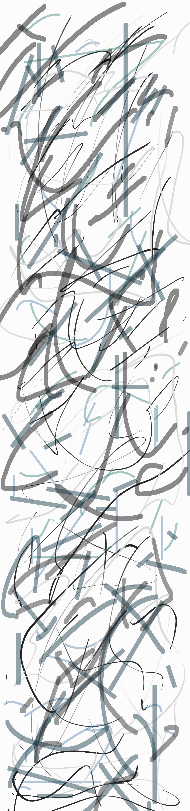
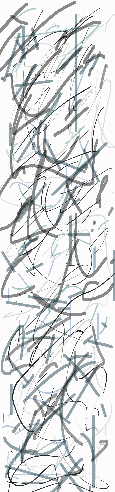
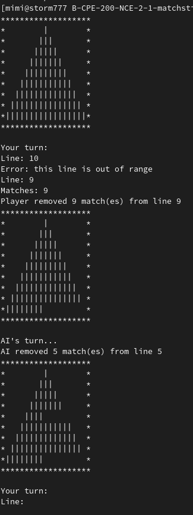
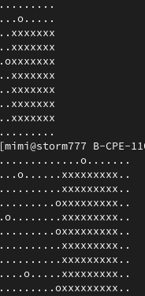

Étant actuellement à la recherche d'un stage de début de deuxième année, je vous présente ici, les différents projets que j'ai pu réaliser durant cette année. Car oui, on peut en faire beaucoup des choses en une année !!!
Matchsitck
Mais qu'est-ce que le matchsitck ? Et bien comme le jeu des allumettes dans fort-boyard, le but est de ne pas prendre le dernier bâton. Ici, le jeu est présenté sous forme de pyramide, où la largeur est renseignée par le joueur. Le nombre de bâton maximum que le joueur, ou l'IA, puisse enlever est lui aussi renseigné par le joueur. L'intelligence artificielle est aléatoire.
Dante star

Le Dante's Star est un projet de création d'algorithmes de résolution et de création du labyrinthe. Plusieurs types de labyrinthe son disponible à la génération, les labyrinthes parfaits et les labyrinthes imparfaits. l'algorithme de résolution est tout-Terrain, il trouvera la sortie peu importe le type de labyrinthe. Ps: un labyrinthe parfait n'a qu'un seul chemin vers la sortie, un labyrinthe imparfait en a plusieurs!!
BSQ [Biggest Square]
Le BSQ est un projet de création d'algorithmes de recherche, le but est de trouver le carré le plus grand dans une map contenant des obstacles définis par les "o", beaucoup de sécurités sont attendues et l'algorithme à un temps limité pour trouver le plus grand carré
My_sokoban
Le my_sokoban est comme son nom l'indique, un projet où l'on recopie le jeu Sokoban. Utilisation de la lib Ncurses pour créer une interface graphique dans un terminal.